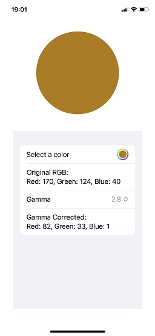
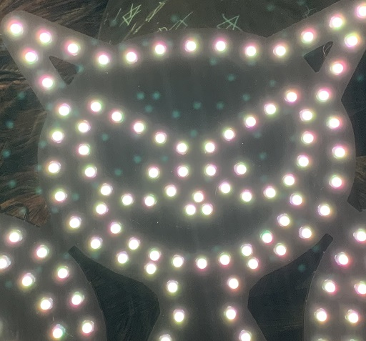
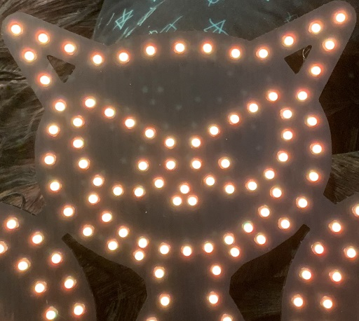

Support for the Gamma Corrector App
Gamma Corrector is a simple app used to get gamma corrected RGB values for inputting into your LED controller that doesn't support automatic gamma correction.
Using the app
Use the color selector to select a color. The app will display two sets of RGB values. The values of the color you selected, and a set of values that have had a gamma curve applied to them.
You can change the applied gamma using the gamma value selection. Values between 2.2 and 3.0 tend to have the best results. Feel free to experiment.
Example
When using the app, for example, let's say you want this color:

If you input the values 170,124,40 into your trimlight app, it would show that color, but on the LEDs it would look more like:

If instead you input the values 82,33,1, as suggested by Gamma Corrector, in the app it would look like a very dark brown, but on your LEDs it would look more like your original color:

Note, due to the way our eyes work, the difference is much more pronounced in person. Cameras don't fully capture the same range that we see.
Support
If you need support with the app, you can contact me at the email address below, but a better place to get support would be the "Trimlight Community" group on Facebook.
- Questions: questions@wuzzle.org